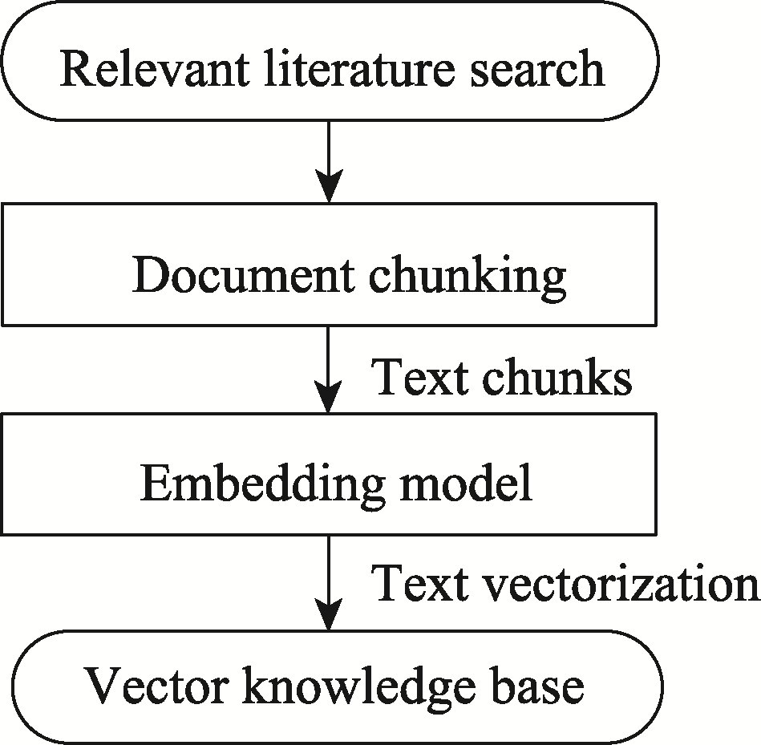
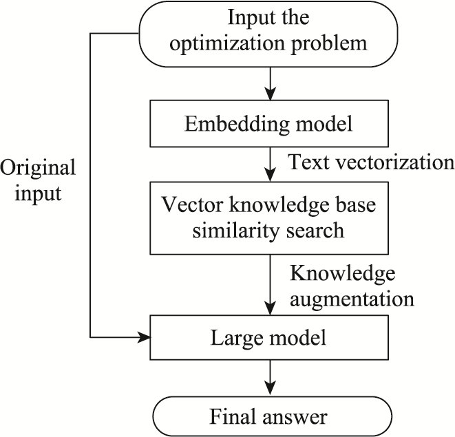
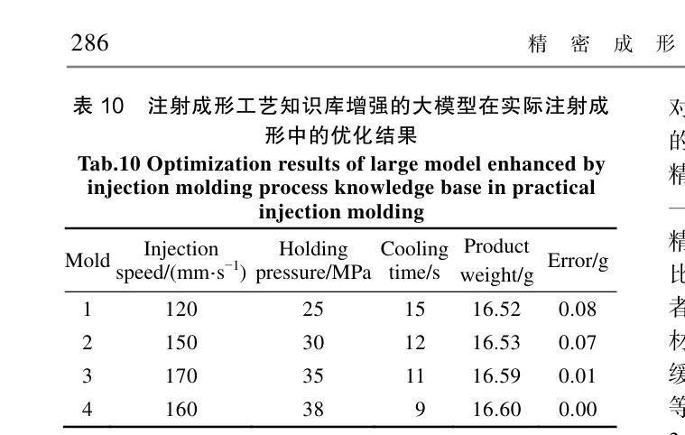
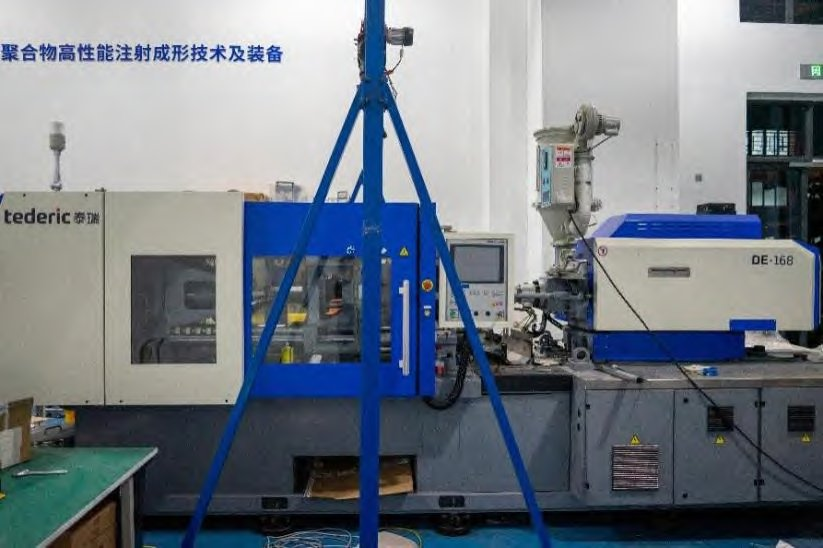
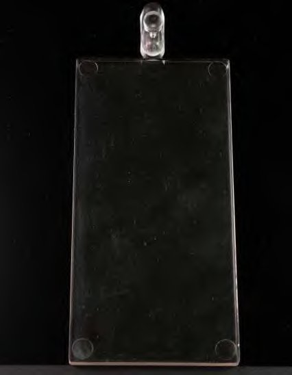

大模型辅助的工艺参数推荐（知识库增强 RAG）LLM-assisted Parameter Recommendation (Knowledge-augmented RAG)
针对注射成形工艺调试"依赖经验、试错成本高、周期长"的问题，构建知识库增强(RAG)的生成式大模型工艺优化框架：自动搜集 819 篇中英文文献，用嵌入模型切分编码成向量知识库；本地部署大模型按"实际与目标质量偏差"做检索增强生成，动态给出参数调整建议并附推理依据；在 PC、PMMA 等材料上 3 轮内精准收敛至目标质量，显著优于无知识库大模型与人工试错（需 7 轮以上）。For molding tuning that is experience-dependent, costly and slow, this builds a knowledge-augmented (RAG) generative-LLM framework: 819 papers are chunked and encoded by an embedding model into a vector knowledge base; a locally deployed LLM performs retrieval-augmented generation based on the gap between actual and target quality, giving parameter advice with reasoning; on PC, PMMA and more it converges within 3 rounds—far better than an LLM without the knowledge base or manual trial-and-error (7+ rounds).
背景Background
注塑调参高度依赖老师傅经验，试错成本高、周期长，新人上手慢。Molding tuning relies heavily on veteran experience—costly, slow, and hard for newcomers.
方法Method
- 构建向量知识库：自动搜集 819 篇中英文工艺文献 → 文档切分 → 嵌入模型编码 → 向量知识库。Build the vector knowledge base: auto-collect 819 papers → chunking → embedding-model encoding → vector store.
- 检索增强生成：本地部署大模型，按当前与目标质量的偏差检索相关知识，增强生成参数调整建议与推理依据（Zotero / AnythingLLM / Ollama）。Retrieval-augmented generation: a local LLM retrieves relevant knowledge by the quality gap and generates parameter advice with reasoning (Zotero / AnythingLLM / Ollama).
结果与亮点Results & Highlights
- PC、PMMA 等材料 3 轮内收敛至目标质量；无知识库大模型与人工试错（7 轮+）均不及。Converges within 3 rounds on PC/PMMA; beats the no-knowledge-base LLM and manual trial-and-error (7+ rounds).
- 在真实注塑机上验证：4 模内将重量误差降至 0（见下表 10）。Validated on a real molding machine: weight error reduced to 0 within 4 molds (Table 10 below).
- 成果发表于中文核心《精密成形工程》。Published in the CSCD-core Journal of Netshape Forming Engineering.
方法框架Framework


实验结果与实物Results & Real Setup



本人角色：参与该课题组合作研究，涉及本地大模型部署、知识库构建与实验等环节。My role: contributed to this collaborative lab research—local LLM deployment, knowledge-base construction and experiments.